1 / 95Programování grafických aplikací základní operace s obrazemRadek RichtrInstitute of Information Theory and AutomationAcademy of Sciences of the Czech RepublicPrague, Czech Republic14. srpna 2026
2 / 95ObsahRovinná grafika: obraz a 2D objektyTransformace: barvy a geometrieKonvoluce: definice, okraje a filtryDiskrétní obraz a filtraceDoporučené zdroje
3 / 95Cíle přednášky Po absolvování přednášky by měl student umět: rozlišit spojitou scénu, vzorkovaný obraz a kvantované hodnoty pixelů; vysvětlit rasterizaci základních 2D objektů a geometrickou spojitost křivek; zapsat diskrétní 2D konvoluci a zvolit vhodnou okrajovou podmínku; odlišit vyhlazení, detekci hran a ostření podle vlastností jádra.
6 / 95Intro teoretická přednáška přehled algoritmických podkladů ... a matematických podkladů pro grafické algoritmy
7 / 95Intro teoretická přednáška přehled algoritmických podkladů ... a matematických podkladů pro grafické algoritmy matematika je základ, bez kterého to nejde (alespoň její intuitivní pochopení)
11 / 95Matematické minimum rovnice, parametrické rovnice sumy, integrály matice, násobení matic transformace
12 / 95Matematické minimum rovnice, parametrické rovnice sumy, integrály matice, násobení matic transformace determinant
13 / 95Obraz Nejzákladnějí pojmy bývají nejobtížněji definovatelné: obraz, textura, atd. Objekty jsou popsány matematicky (vektor) - usečky, křivky, text, ... co nejpřesnější vykreslení spojitých útvarů na diskrátní mřížce ořezávání objektů na výřez daný plochou obrazovky nízkoúrovňové operace K vykreslení ale chceme matici pixelů (frame) v rastru Tedy nějaké XXX, YYY a hodnotu Jaká je programová reprezentace restru? int[X][Y]?
14 / 95Reprezentace obrazu XXX, YYY - pozice v rastru SSS - Spektrum Spektrum je dáno barevým modelem zvoleným k reprezentaci Barevné modely - RGB (BGR), YUV, HSV, L*A*B, ... Rozsah obvykle 0-255 =>2563=16777216=> 256^3 = 16777216=>2563=16777216 odstínů Kousek historie High color - 5-6-5 (2B na RGB) True color - 8-8-8 (3B na RGB) kvantování, vzorkování - historie, nebo současnost?
15 / 95Reprezentace obrazu Reprezentace obrazu pomocí např. RGB hodnot je tzv. přímá (direct color) Alternativou je indexový mod Každá barva má svůj index, neuvádní se u každého pixelu složení kažé barvy, ale jen index (ukazatel) dané barvy Který je výhodnější a kdy? při ztmavení barev v obrazu zapadajícího slunce při kompresi obrazu
17 / 95Reprezentace obrazu A co video? Sekvece framů? Jaký datový typ a rozsah, organizace v paměti? Programová reprezentace?
18 / 952D objekty Úsečky Kružnice a elipsa (Bresenham) Vyplňování (semínkové vyplňování) Polygon 4-okolí a 8-okolí Ořezávání (Cohen-Sutherland)
21 / 952D objekty Objekty mohu být vektorové… ale jsou vykreslené v rastru! Které z pixelů 'rosvítit'?
31 / 95Bresenhamův algoritmus To, který pixel rastru vykreslit je potřeba vyřešit efektivně! A efektivně nejen na úrovni logiky: dělení je náročná operace a co teprve dělení neceločíselné a co přesnost? Rychlý algoritmus, který je navíc celočíselný!
32 / 95Bresenhamův algoritmus Nachází body nejbíže kreslené přimce a to pomocí celočíselné aritmetiky Funguje symetricky k určité řídící ose Rozhoduje, jestli je další pixel na stejné, nebo vyšší úrovni 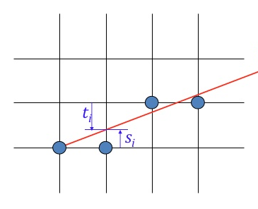
33 / 95Bresenhamův algoritmusvar d = 2*dy - dx var dy = y2-y1; var dx = x2-x1 var x = x1 ; var y = y1 while (x <= x2) { Draw pixel at (x,y) x++ if( d<0 ) d += dy + dy else { d += 2*(dy-dx) y++ } }
34 / 952D objekty Kružnice a elipsy - obdobný problém jako u přímek - výhody ve větší symetrii Křivky - i křivky mohou být 3D! - rozdíl mezi 'křivkou' a 'náhodnou čarou' Polynomiální křivky Spline křivky Beziérovy křivky NURBS 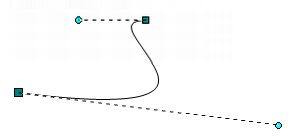 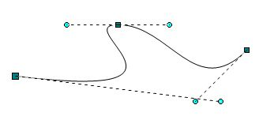 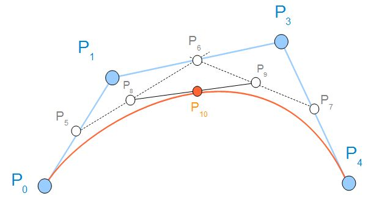
35 / 95Spojitost Spojitost - očekávaný tvar 'budoucí' křivky na základě 'minulé' - stejný tečný vektor i jeho velikost - CmC^mCm parametricá spojitost stupně mmm - GmG^mGm geometrická spojitost stupně mmm
36 / 95Spojitost C0C^0C0: Spojité napojení. Koncový bod první křivky a počáteční bod druhé křivky jsou totožné. Animace pohybu: animovaný objekt nezmění skokem polohu. C1C^1C1: Tečné vektory (první derivace) jsou si v bodě spojení rovny. Animace pohybu: animovaný objekt nezmění skokem směr. C2C^2C2: Druhé derivace v bodě spojení jsou si rovny. Animace pohybu: animovaný objekt nezmění skokem rychlost.
37 / 95Spojitost C0C^0C0: Spojité napojení. Koncový bod první křivky a počáteční bod druhé křivky jsou totožné. Animace pohybu: animovaný objekt nezmění skokem polohu. C1C^1C1: Tečné vektory (první derivace) jsou si v bodě spojení rovny. Animace pohybu: animovaný objekt nezmění skokem směr. C2C^2C2: Druhé derivace v bodě spojení jsou si rovny. Animace pohybu: animovaný objekt nezmění skokem rychlost. 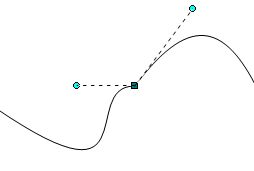
38 / 95Spojitost C0C^0C0: Spojité napojení. Koncový bod první křivky a počáteční bod druhé křivky jsou totožné. Animace pohybu: animovaný objekt nezmění skokem polohu. C1C^1C1: Tečné vektory (první derivace) jsou si v bodě spojení rovny. Animace pohybu: animovaný objekt nezmění skokem směr. C2C^2C2: Druhé derivace v bodě spojení jsou si rovny. Animace pohybu: animovaný objekt nezmění skokem rychlost. 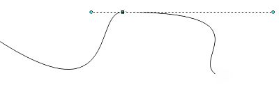
39 / 95Spojitost C0C^0C0: Spojité napojení. Koncový bod první křivky a počáteční bod druhé křivky jsou totožné. Animace pohybu: animovaný objekt nezmění skokem polohu. C1C^1C1: Tečné vektory (první derivace) jsou si v bodě spojení rovny. Animace pohybu: animovaný objekt nezmění skokem směr. C2C^2C2: Druhé derivace v bodě spojení jsou si rovny. Animace pohybu: animovaný objekt nezmění skokem rychlost. 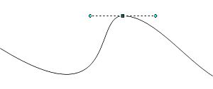
40 / 95Spojitost C0C^0C0: Spojité napojení. Koncový bod první křivky a počáteční bod druhé křivky jsou totožné. Animace pohybu: animovaný objekt nezmění skokem polohu. C1C^1C1: Tečné vektory (první derivace) jsou si v bodě spojení rovny. Animace pohybu: animovaný objekt nezmění skokem směr. C2C^2C2: Druhé derivace v bodě spojení jsou si rovny. Animace pohybu: animovaný objekt nezmění skokem rychlost. G0G^0G0 - počáteční a koncový bod je totožný G1G^1G1 - tečné vektory jsou lineárně závislé
41 / 952D objekty Vyplňování hranice řádkové se seznamem hran semínkový algoritmus Pozor na spojitost v rastru 4-okolí (návaznost při posunu v ose x nebo y) 8-okolí (návazost i diagonálně) Hranice ×\times× vnitřek Obojí 4-okolí? Obojí 8-okolí? Hranice 8-okolí a vnitřek 4-okolí? Hranice 4-okolí a vnitřek 8-okolí?
42 / 952D objekty Ořezávání useček - Cohen-Sutherland Koncové body p1p_1p1 a p0p_0p0 mají bitový kód - p1p_1p1 or p0=0⇒p_0 = 0 \Rightarrowp0=0⇒ úsečka v okně - p1p_1p1 and p0≠0⇒p_0 \neq 0 \Rightarrowp0=0⇒ úsečka celá mimo - jinak ⇒\Rightarrow⇒ úsečka prochází několika oblastmi jinak: Zkrácení úsečky - podle bitového kódu zvolíma další přímku, spočteme průsečík - opakovat dokud úsečka není celá v okně 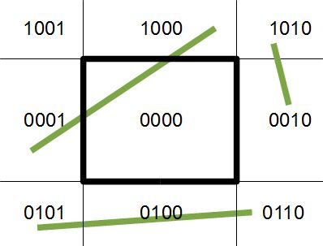
43 / 95Transformace barev Změna barevné charakteristiky - jas, kontrast, gama - úprava k tisku nebo zobrazení Konstantní prah - informace jen o hodnote barvy Náhodné rozptýlení - informace jen o hodnote barvy Pravidelné (maticové) rozptýlení - vyžaduje i souřadnice vstupního pixelu Distribuce zaokrouhlovací chyby - pixely je nutno navíc zpracovat v určitem pořadí (řádky, ...)
45 / 95Transformace barev Konstantní prah - pevný převod do (obvykle značně) omezené palety barev - paleta buď rovnoměrně rozdělená, nebo optimalizovaná - často například u tisku posterů, plakátů
46 / 95Transformace barev Konstantní prah - pevný převod do (obvykle značně) omezené palety barev - paleta buď rovnoměrně rozdělená, nebo optimalizovaná - často například u tisku posterů, plakátů
47 / 95Transformace barev Konstantní prah - pevný převod do (obvykle značně) omezené palety barev - paleta buď rovnoměrně rozdělená, nebo optimalizovaná - často například u tisku posterů, plakátů
48 / 95Transformace barev Náhodné rozptýlení - intenzita zdrojové černé ⇒\Rightarrow⇒ pravděpodobnost
49 / 95Transformace barev Náhodné rozptýlení - intenzita zdrojové černé ⇒\Rightarrow⇒ pravděpodobnost
50 / 95Transformace barev Maticové rozptýlení - pixel nestojí sám o sobě, převádí se malé oblasti - konkrétních rozptylovacích matic je mnoho
51 / 95Transformace barev Maticové rozptýlení - pixel nestojí sám o sobě, převádí se malé oblasti - konkrétních rozptylovacích matic je mnoho 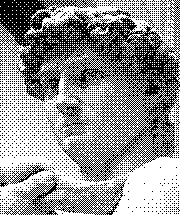
52 / 95Transformace barev Maticové rozptýlení - pixel nestojí sám o sobě, převádí se malé oblasti - konkrétních rozptylovacích matic je mnoho 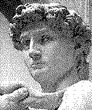
53 / 95Transformace barev Maticové rozptýlení - pixel nestojí sám o sobě, převádí se malé oblasti - konkrétních rozptylovacích matic je mnoho Cin={1,2,3,4,5}[0000][0001][0011][0111][1111],[0321]C_{in} = \{1,2,3,4,5\} \begin{bmatrix} 0 & 0\\ 0 & 0\\ \end{bmatrix} \begin{bmatrix} 0 & 0\\ 0 & 1\\ \end{bmatrix} \begin{bmatrix} 0 & 0\\ 1 & 1\\ \end{bmatrix} \begin{bmatrix} 0 & 1\\ 1 & 1\\ \end{bmatrix} \begin{bmatrix} 1 & 1\\ 1 & 1\\ \end{bmatrix}, \begin{bmatrix} 0 & 3\\ 2 & 1\\ \end{bmatrix}Cin={1,2,3,4,5}[0000][0001][0101][0111][1111],[0231] A jak by fungoval převod do ASCII?
54 / 95Transformace barev Maticové rozptýlení - pixel nestojí sám o sobě, převádí se malé oblasti - konkrétních rozptylovacích matic je mnoho Mdispej=[0123158411721411310695]M_{dispej} = \begin{bmatrix} 0 & 12 & 3 &15 \\ 8 & 4 & 11 &7 \\ 2 & 14 & 1 &13 \\ 10 & 6 & 9 &5 \\ \end{bmatrix}Mdispej=0821012414631119157135 Mtisk=[1592812136415141001173]M_{tisk} = \begin{bmatrix} 1 & 5 & 9 &2 \\ 8 & 12 & 13 &6 \\ 4 & 15 & 14 &10 \\ 0 & 11 & 7 &3 \\ \end{bmatrix}Mtisk=1840512151191314726103
55 / 95Transformace barev Distribuce zaokrouhlovací chyby - pixel nestojí sám o sobě - při převodu do omezené palety vnikne chyba - ta se rozdistribuuje do ještě nepřevedených pixelů v okolí Floyd–Steinberg dithering - distribude chyby + optimalizované paleta [⋆716......316516116...]\begin{bmatrix} & & & &\\[0.3em] & & \star & \frac{7}{16} &... \\[0.3em] ... & \frac{3}{16} & \frac{5}{16} & \frac{1}{16} & ... \end{bmatrix}...163⋆165167161......
62 / 95Transformace barev Originál 8bit prah. 8bit distr. 8bit opt + dith. 16b paleta 16b paleta + dith.
63 / 95Konvoluce (f∗g)(t)=∫−∞∞f(τ)g(t−τ)dτ(f \ast g)(t) = \int\limits_{-\infty}^{\infty} f(\tau)g(t-\tau)d\tau(f∗g)(t)=−∞∫∞f(τ)g(t−τ)dτ ∗:L1×L1⟶L1\ast : L_1 \times L_1 \longrightarrow L_1∗:L1×L1⟶L1
64 / 95Spojitá konvoluce 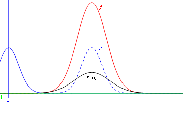 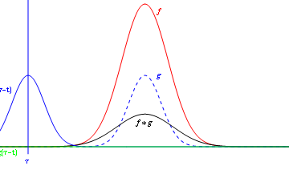 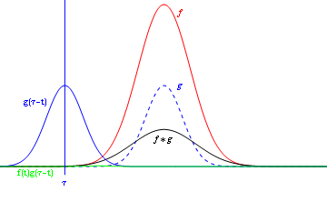 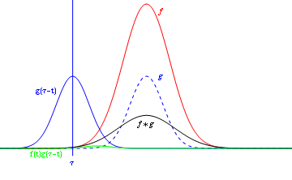 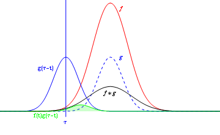 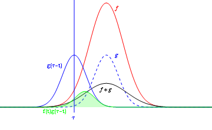 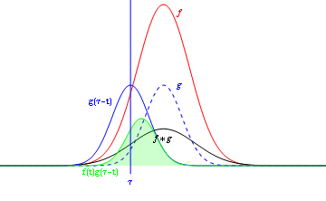 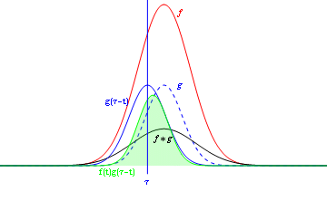 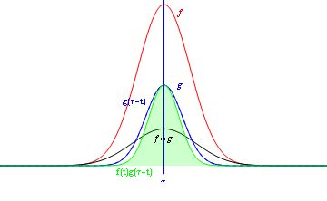 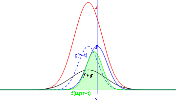 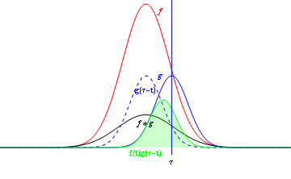 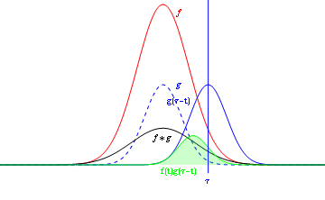 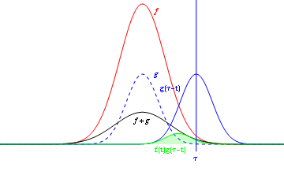 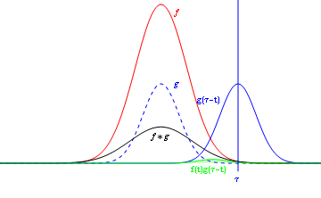 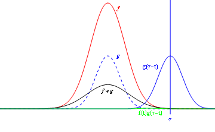 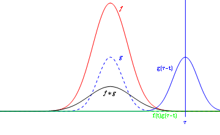 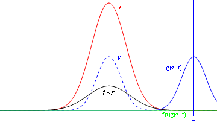 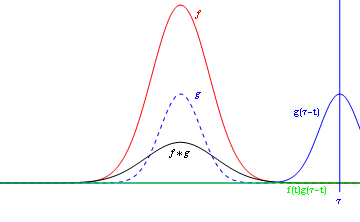 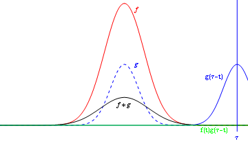 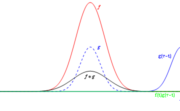
66 / 95Konvoluce Základní vlastnosti f∗g=g∗ff \ast g = g \ast ff∗g=g∗f f∗(g∗h)=(f∗g)∗hf \ast (g \ast h) = (f \ast g) \ast hf∗(g∗h)=(f∗g)∗h a(f∗g)=(af)∗g=f∗(ag)a (f \ast g) = (af) \ast g = f \ast (ag)a(f∗g)=(af)∗g=f∗(ag) f∗(g+h)=(f∗g)+(f∗h)f \ast (g + h) = (f \ast g) + (f \ast h)f∗(g+h)=(f∗g)+(f∗h) f∗δ=δ∗f=ff \ast \delta = \delta \ast f = ff∗δ=δ∗f=f
67 / 95Konvoluce δ(x)={∞,if x=0.0,otherwise.\delta(x) =\begin{cases} \infty, & \text{if }x=0\text{}.\\ 0, & \text{otherwise}. \end{cases}δ(x)={∞,0,if x=0.otherwise. ∫δ(x)dx=1\int\limits_{ }^{ } \delta(x)dx = 1∫δ(x)dx=1 ∫−∞∞f(x)δ(x−a)dx=f(a)\int\limits_{-\infty}^{\infty} f(x)\delta(x-a)dx = f(a)−∞∫∞f(x)δ(x−a)dx=f(a)
68 / 95Diskrétní Konvoluce Diskrétní konvoluce (rastr) 1D (f∗g)[n]=∑m=−∞∞f[m] g[n−m](f\ast g)[n]=\sum_{m=-\infty}^{\infty} f[m]\,g[n-m](f∗g)[n]=m=−∞∑∞f[m]g[n−m]
69 / 95Diskrétní konvoluce Diskrétní konvoluce (rastr) 2D (obrázky) (f∗g)[m,n]=∑i=−∞∞∑j=−∞∞f[i,j] g[m−i,n−j](f\ast g)[m,n]=\sum_{i=-\infty}^{\infty}\sum_{j=-\infty}^{\infty} f[i,j]\,g[m-i,n-j](f∗g)[m,n]=i=−∞∑∞j=−∞∑∞f[i,j]g[m−i,n−j]
71 / 95Okrajový jev Diskrétní konvoluce (rastr) 2D (obrázky) Okrajový jev: A co na kraji obrazu? - type valid - type same - type full
72 / 95Okrajový jev Diskrétní konvoluce (rastr) 2D (obrázky) Okrajový jev: A co na kraji obrazu? - oblepení nulami (zero padding) - zrcadlové prodloužení (mirror extension) - periodické prodloužení (periodic/toroid extension) [https://en.wikipedia.org/wiki/Lenna]
73 / 95Okrajový jev Diskrétní konvoluce (rastr) 2D (obrázky) Okrajový jev: A co na kraji obrazu? - oblepení nulami (zero padding) - zrcadlové prodloužení (mirror extension) - periodické prodloužení (periodic/toroid extension) [https://en.wikipedia.org/wiki/Lenna]
74 / 95Okrajový jev Diskrétní konvoluce (rastr) 2D (obrázky) Okrajový jev: A co na kraji obrazu? - oblepení nulami (zero padding) - zrcadlové prodloužení (mirror extension) - periodické prodloužení (periodic/toroid extension) [https://en.wikipedia.org/wiki/Lenna]
75 / 95Konvoluční filtry Prosté a vážené průměrování Odšumění Detekce hran Ostření Filtry ve frekvenční oblasti (příště)
76 / 95Odšumění Prosté a vážené průměrování Odšumění Součet roven 1 - proč? 19×[111111111]\frac{1}{9} \times \begin{bmatrix} 1 & 1 & 1 \\ 1 & 1 & 1 \\ 1 & 1 & 1 \\ \end{bmatrix}91×111111111
77 / 95Odšumění Prosté a vážené růměrování Gaussův šum Součet roven 1 - proč? 116×[121242121]\frac{1}{16} \times \begin{bmatrix} 1 & 2 & 1 \\ 2 & 4 & 2 \\ 1 & 2 & 1 \\ \end{bmatrix}161×121242121
78 / 95Detekce hran Sobelův operátor - první derivace - směrově orientovaný - dvojice masek h a h Součet roven 0 - Proč? h=[−101−202−101]h‾=[121000−1−2−1]h = \begin{bmatrix} -1 & 0 & 1 \\ -2 & 0 & 2 \\ -1 & 0 & 1 \\ \end{bmatrix} \overline{h} = \begin{bmatrix} 1 & 2 & 1 \\ 0 & 0 & 0 \\ -1 & -2 & -1 \\ \end{bmatrix}h=−1−2−1000121h=10−120−210−1 ∣G∣=h2+h2‾|G| = \sqrt{h^2 + \overline{h^2}}∣G∣=h2+h2
79 / 95Detekce hran Sobelův operátor - první derivace - směrově orientovaný - dvojice masek hhh a h‾\overline{h}h h=[−2−10−101012]h‾=[0−1−210−1210]h = \begin{bmatrix} -2 & -1 & 0 \\ -1 & 0 & 1 \\ 0 & 1 & 2 \\ \end{bmatrix} \overline{h} = \begin{bmatrix} 0 & -1 & -2 \\ 1 & 0 & -1 \\ 2 & 1 & 0 \\ \end{bmatrix}h=−2−10−101012h=012−101−2−10 ∣G∣=h2+h2‾|G| = \sqrt{h^2 + \overline{h^2}}∣G∣=h2+h2
80 / 95Detekce hran Robinsonův operátor Kirschův operátor hRobin=[−1−1−11−21111]hKirsch=[−5−5−5303333]h_{Robin} = \begin{bmatrix} -1 & -1 & -1 \\ 1 & -2 & 1 \\ 1 & 1 & 1 \\ \end{bmatrix} h_{Kirsch} = \begin{bmatrix} -5 & -5 & -5 \\ 3 & 0 & 3 \\ 3 & 3 & 3 \\ \end{bmatrix}hRobin=−111−1−21−111hKirsch=−533−503−533 ∣G∣=h2+h2‾|G| = \sqrt{h^2 + \overline{h^2}}∣G∣=h2+h2
81 / 95Detekce hran Laplaceův operátor - druhá derivace - dvojí reakce na hranu λ=[1111−81111]λ=[0101−41010]\lambda = \begin{bmatrix} 1 & 1 & 1 \\ 1 & -8 & 1 \\ 1 & 1 & 1 \\ \end{bmatrix} \lambda = \begin{bmatrix} 0 & 1 & 0 \\ 1 & -4 & 1 \\ 0 & 1 & 0 \\ \end{bmatrix}λ=1111−81111λ=0101−41010 více: [Gonz89][Gonz97][Lewi90]
83 / 95Ostření Zaostření pomocí detekce hran Vysoké frekvence Nízké frekvence λ=[1111−81111]λ=[0101−41010]\lambda = \begin{bmatrix} 1 & 1 & 1 \\ 1 & -8 & 1 \\ 1 & 1 & 1 \\ \end{bmatrix} \lambda = \begin{bmatrix} 0 & 1 & 0 \\ 1 & -4 & 1 \\ 0 & 1 & 0 \\ \end{bmatrix}λ=1111−81111λ=0101−41010 ∣G∣=Gx2+Gy2|G| = \sqrt{G_x^2 + G_y^2}∣G∣=Gx2+Gy2
84 / 95Vzorkování a kvantování nejsou totéž Vzorkování určuje, kde obraz měříme: prostorové souřadnice (m,n)(m,n)(m,n). Kvantování určuje, kolika hodnotami měření reprezentujeme: například 256 úrovní na kanál. Nedostatečné vzorkování vytváří aliasing; hrubé kvantování vytváří páskování a kvantizační šum. Vyšší bitová hloubka neopraví chybějící prostorové vzorky a vyšší rozlišení neobnoví ztracené odstíny.
85 / 95Nyquistova podmínka a aliasing Je-li nejvyšší prostorová frekvence obrazu fmaxf_{\max}fmax, musí vzorkovací frekvence splnit fs>2fmax.f_s > 2f_{\max}.fs>2fmax. Frekvence nad fs/2f_s/2fs/2 se po vzorkování jeví jako nižší frekvence. V obraze vzniká moaré, falešné hrany nebo blikání jemných struktur v animaci. Praktické řešení: před zmenšením použít dolní propust; při renderingu integrovat přes plochu pixelu.
86 / 95Diskrétní 2D konvoluce: přesná definice Pro obraz III a jádro hhh rozměru (2a+1)×(2b+1)(2a+1)\times(2b+1)(2a+1)×(2b+1) definujeme (I∗h)[m,n]=∑i=−aa∑j=−bbh[i,j]I[m−i,n−j].(I*h)[m,n]=\sum_{i=-a}^{a}\sum_{j=-b}^{b}h[i,j]I[m-i,n-j].(I∗h)[m,n]=i=−a∑aj=−b∑bh[i,j]I[m−i,n−j]. Jádro se při konvoluci obrací v obou osách; bez obrácení jde o korelaci. U symetrických jader (např. Gaussova) mají obě operace stejný výsledek. Součet koeficientů jedna zachovává konstantní jas; součet nula potlačuje konstantní oblasti.
87 / 95Co se děje na hranici obrazu? Pro výpočet poblíž okraje chybějí vzorky. Volba rozšíření je součást algoritmu: nuly: jednoduché, ale vytvářejí tmavý lem; replikace: prodlužuje krajní hodnotu; zrcadlení: obvykle omezuje skok na hranici; periodické rozšíření: přirozené pro DFT, nevhodné pro nenavazující obraz. Výstup valid používá jen úplná okolí; same zachovává rozměr pomocí zvolené okrajové podmínky.
88 / 95Separabilní filtr a výpočetní cena Pokud lze jádro zapsat jako h[i,j]=u[i]v[j]h[i,j]=u[i]v[j]h[i,j]=u[i]v[j], pak I∗h=(I∗u)∗v.I*h=(I*u)*v.I∗h=(I∗u)∗v. Přímá konvoluce s jádrem k×kk\times kk×k stojí přibližně k2k^2k2 operací na pixel. Dvě jednorozměrné konvoluce potřebují přibližně 2k2k2k operací na pixel. Gaussovské vyhlazení je separabilní; velká jádra jsou proto výrazně levnější.
89 / 95Od derivace k hraně a ostření První derivace (Sobel, Scharr) odhaduje gradient ∇I=(Ix,Iy)\nabla I=(I_x,I_y)∇I=(Ix,Iy). Velikost ∥∇I∥2=Ix2+Iy2\lVert\nabla I\rVert_2=\sqrt{I_x^2+I_y^2}∥∇I∥2=Ix2+Iy2 vyjadřuje sílu hrany, atan2(Iy,Ix)\operatorname{atan2}(I_y,I_x)atan2(Iy,Ix) její orientaci. Laplaceův operátor ∇2I=Ixx+Iyy\nabla^2 I=I_{xx}+I_{yy}∇2I=Ixx+Iyy je izotropní, ale citlivý na šum. Unsharp masking ostří obraz jako Isharp=I+α(I−Gσ∗I)I_{\mathrm{sharp}}=I+\alpha(I-G_\sigma*I)Isharp=I+α(I−Gσ∗I). Derivaci proto obvykle předchází vyhlazení; jinak zesílíme i vysokofrekvenční šum.
90 / 95Shrnutí a kontrolní otázky Vzorkování určuje prostorové rozlišení, kvantování rozlišení hodnot. Konvoluce je lokální lineární operace; výsledek závisí také na práci s okrajem. Součet koeficientů jádra napovídá reakci na konstantní jas. Proč před zmenšením obrazu používáme dolní propust? Kdy se konvoluce a korelace liší? Proč derivace zesilují šum a jak tomu předcházet?
91 / 95Doporučené zdroje IRafael C. Gonzalez a Richard E. Woods: Digital Image Processing. Pearson, 4. vydání, 2018. Zpracování obrazu, konvoluce a frekvenční filtrace.Alan V. Oppenheim a Ronald W. Schafer: Discrete-Time Signal Processing. Prentice Hall, 3. vydání, 2010. Diskrétní systémy a Fourierova transformace.